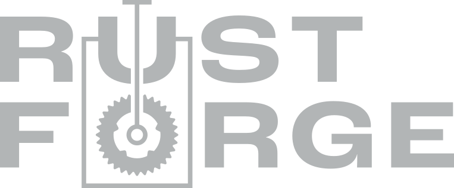

Reflect your Rust API into the world
Define your web API in Rust, generate typed TypeScript, Python and Rust clients, typed streams included. Serve it with Axum, Cloudflare Workers or any HTTP server.
Your Rust code is the contract
Each Rust route reaches every client as the same typed function: input, output, errors and streamed events.
- 01
Derive
reflectapi::Inputorreflectapi::Outputbeside serde's derives. - 02
Route
Plain async handlers, named on a
Builderthat gives the schema and the routes. - 03
Generate
reflectapi codegenwrites the clients from the schema. - 04
Call
Typed functions, in TypeScript, Python or Rust.
use reflectapi::{Builder, Empty, Input, Output}; use serde::{Deserialize, Serialize}; // 01 Derive #[derive(Deserialize, Input)] struct CreateUser { name: String, email: String } #[derive(Serialize, Output)] struct User { id: u32, name: String, email: String } // 02 Route async fn create_user( _: (), req: CreateUser, _: Empty, ) -> User { User { id: 1, name: req.name, email: req.email } } let (schema, routers) = Builder::new() .route(create_user, |r| r.name("users.create")) .build()?;
// 04 Call import { client } from "./generated"; const api = client("https://api.example.com"); const result = await api.users.create( { name: "Ada", email: "ada@example.com" }, {}, ); if (result.is_ok()) { console.log(result.unwrap_ok().id); }
# 04 Call from api_client import AsyncClient from api_client.my_api import CreateUser api = AsyncClient("https://api.example.com") response = await api.users.create( CreateUser(name="Ada", email="ada@example.com") ) print(response.value.id)
// 04 Call use api_client::types::my_api::CreateUser; use reflectapi::Empty; let api = api_client::Interface::try_new( reqwest::Client::new(), "https://api.example.com".parse()?, )?; let input = CreateUser { name: "Ada".into(), email: "ada@example.com".into(), }; if let Ok(user) = api.users.create(input, Empty {}).await { println!("{}", user.id); }
use futures_util::{stream, Stream}; use reflectapi::{Builder, Empty, Infallible, Output}; use serde::Serialize; // 01 Derive #[derive(Serialize, Output)] #[serde(tag = "type")] enum UserEvent { Created { id: u32, name: String }, Deleted { id: u32 }, } // 02 Route async fn user_events( _: (), _: Empty, _: Empty, ) -> Result<impl Stream<Item = UserEvent>, Infallible> { Ok(stream::iter([UserEvent::Deleted { id: 1 }])) } let (schema, routers) = Builder::new() .stream_route(user_events, |r| r.name("users.events")) .build()?;
// 04 Call import { client } from "./generated"; const api = client("https://api.example.com"); const events = await api.users.events({}, {}); if (events.is_ok()) { for await (const event of events.unwrap_ok()) { switch (event.type) { case "Created": console.log(event.name); break; case "Deleted": console.log(event.id); break; } } }
# 04 Call from api_client import AsyncClient from api_client.my_api import ( UserEventCreated, UserEventDeleted, ) api = AsyncClient("https://api.example.com") async for event in api.users.events(): match event.root: case UserEventCreated(name=name): print(name) case UserEventDeleted(id=id): print(id)
// 04 Call use api_client::types::my_api::UserEvent::*; use futures_util::StreamExt; use reflectapi::Empty; let api = api_client::Interface::try_new( reqwest::Client::new(), "https://api.example.com".parse()?, )?; let opened = api.users.events(Empty {}, Empty {}).await; if let Ok(mut events) = opened { while let Some(event) = events.next().await { match event? { Created { name, .. } => println!("{name}"), Deleted { id } => println!("{id}"), } } }
Serve the routes with axum in one call, on Cloudflare Workers, or from any HTTP server. How it works, in detail
Generated clients as precise as your Rust types
Errors are types too
A route's error enum chooses each response's status, and every client gets it as a typed value to match on, kept apart from network failures. Errors
#[derive(Serialize, Output, StatusCode)] enum CreateUserError { #[reflectapi(status = 409)] EmailTaken, #[reflectapi(status = 422)] InvalidEmail { reason: String }, } // async fn create_user(...) // -> Result<User, CreateUserError>
const error = result.unwrap_err().err(); if (error !== undefined) { console.log(match(error, { EmailTaken: () => "taken", InvalidEmail: ({ reason }) => reason, })); } // Leave out a variant: a type error.
except ApplicationError as e: match e.typed_error and e.typed_error.root: case "EmailTaken": print("taken") case InvalidEmail(reason=reason): print(reason)
match api.users.create(input, Empty {}).await { Ok(user) => println!("{}", user.id), Err(Error::Application(e)) => match e { EmailTaken => println!("taken"), InvalidEmail { reason } => { println!("{reason}") } }, Err(other) => println!("{other}"), } // Leave out a variant: a compile error.
Generics
A generic type stays generic in every client, Python and Rust included, instead of one copy per use. Types
#[derive(Serialize, Output)] struct Page<T> { items: Vec<T>, cursor: Option<String>, } // users.list returns Page<User>
export interface Page<T> { items: Array<T>, cursor: (string | null), } // users.list gives // AsyncResult<Page<User>, {}>
class MyApiPage(BaseModel, Generic[T]): items: list[T] cursor: str | None # users.list gives # ApiResponse[Page[User]]
pub struct Page<T> { pub items: Vec<T>, pub cursor: Option<String>, } // users.list gives // Result<Page<User>, _>
Enums with data
serde's tagging styles become discriminated unions, so the client narrows on the tag. Enums
#[derive(Serialize, Output)] #[serde(tag = "type")] enum Shape { Circle { radius: f64 }, Rect { w: f64, h: f64 }, }
export type Shape = | { type: "Circle", radius: number } | { type: "Rect", w: number, h: number }
class MyApiShapeCircle(BaseModel): type: Literal['Circle'] radius: float class MyApiShapeRect(BaseModel): type: Literal['Rect'] w: float h: float class MyApiShape(RootModel): root: Annotated[ Union[ MyApiShapeCircle, MyApiShapeRect ], Field(discriminator='type'), ]
#[derive(Debug, serde::Deserialize)] #[serde(tag = "type")] pub enum Shape { Circle { radius: f64 }, Rect { w: f64, h: f64 }, }
Absent, null or a value
For partial updates, reflectapi::Option tells "not sent" from "set to null", and the clients keep all three states. Option
#[derive(Deserialize, Input)] struct UserPatch { #[serde(default)] nickname: reflectapi::Option<String>, }
export interface UserPatch { nickname?: (string | null | undefined), }
class MyApiUserPatch(ReflectapiPartialModel): nickname: str | None = None # Sends only the fields you set: # unset is left out, None is sent as null.
#[derive(Debug, serde::Serialize)] pub struct UserPatch { #[serde(skip_serializing_if = "reflectapi::Option::is_undefined")] pub nickname: reflectapi::Option<String>, }
Deprecations reach the editor
A deprecated field or route is marked in every client, so editors strike it through. A deprecated response field also turns optional, ready for its removal. Deprecations
#[derive(Serialize, Output)] struct Profile { #[deprecated(note = "Use display_name.")] nickname: String, display_name: String, }
export interface Profile { /** @deprecated Use display_name. */nickname?: string, display_name: string, }
class MyApiProfile(ReflectapiPartialModel): nickname: str | None = Field( default=None, deprecated="Use display_name.", ) display_name: str
pub struct Profile { #[deprecated(note = "Use display_name.")] pub nickname: Option<String>, pub display_name: String, }
And more
The rest of what a Rust type says reaches the clients too.
- Doc commentsBecome docs in every client.
- NamespacesModule paths become client modules.
- Flatten and renameserde's attributes, respected.
- Typed headersRequest and response headers as types.
- Open enumsClients accept variants added later.
- OpenAPIA document for every other language and tool.
Reflect your Rust API into the world
Why reflectapi exists, why client generation through OpenAPI kept failing, and a live demo of a server change turning into a compile error in its client.
Watch the talk
Get started
$ cargo add reflectapi --features builder,axum
$ cargo binstall reflectapi-cli